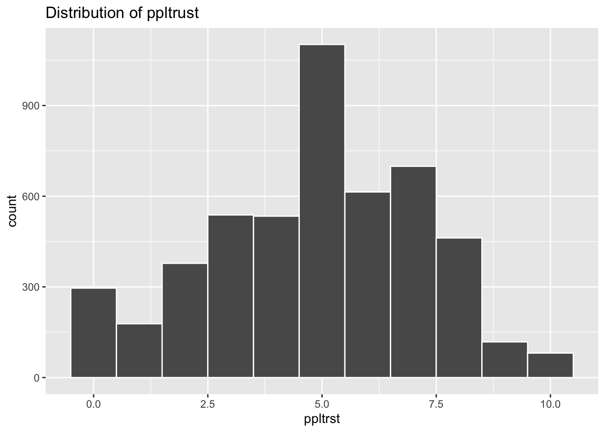
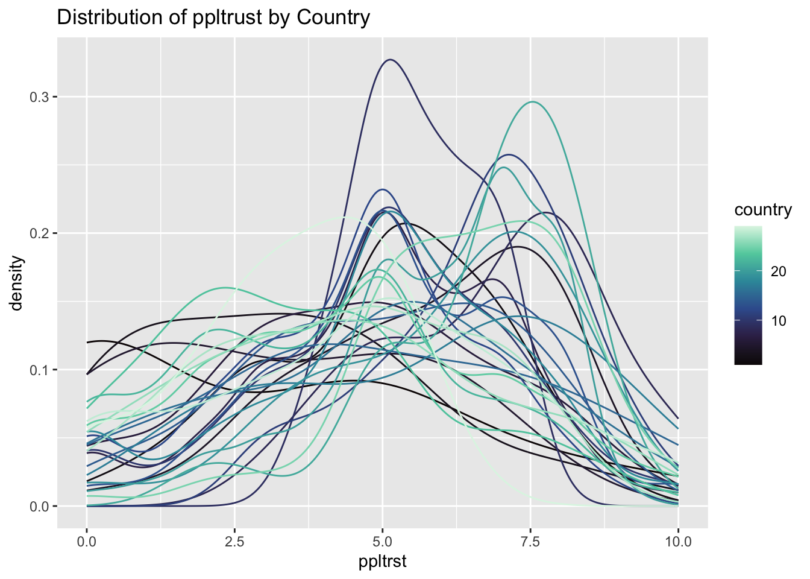
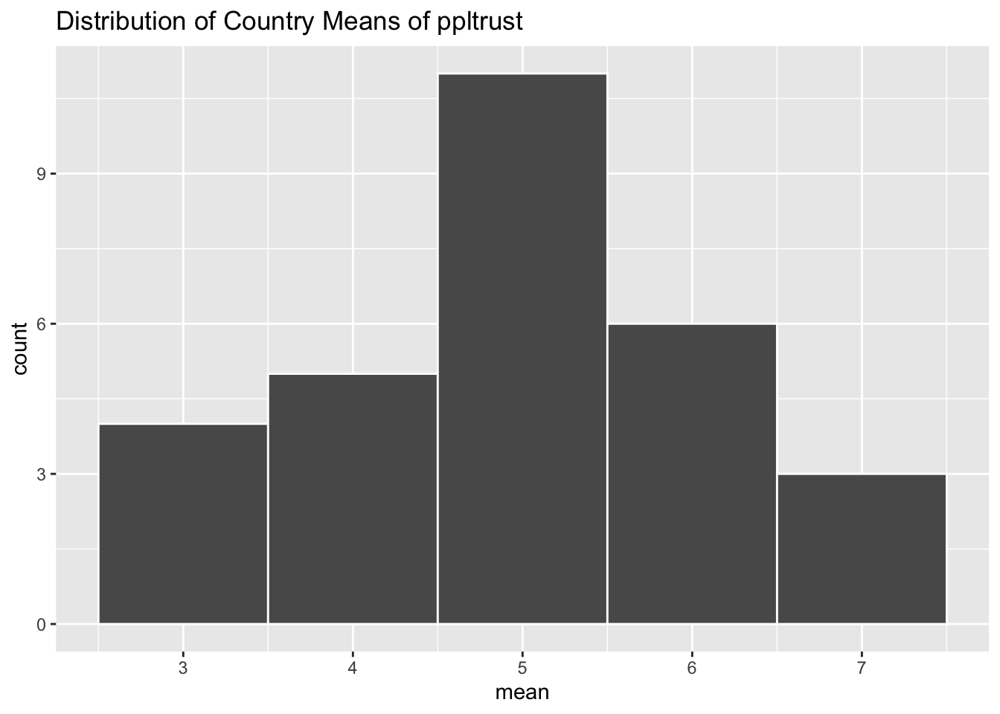
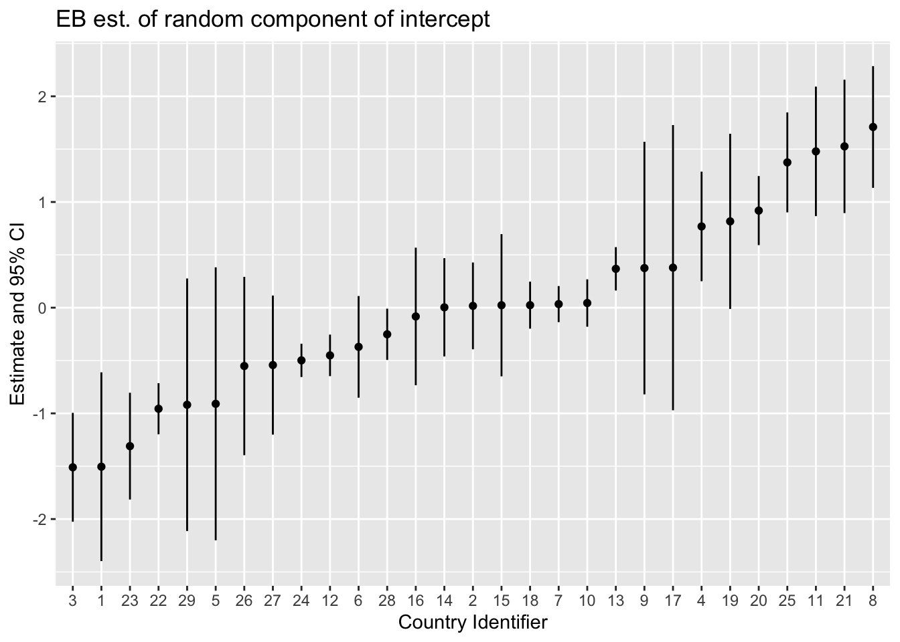
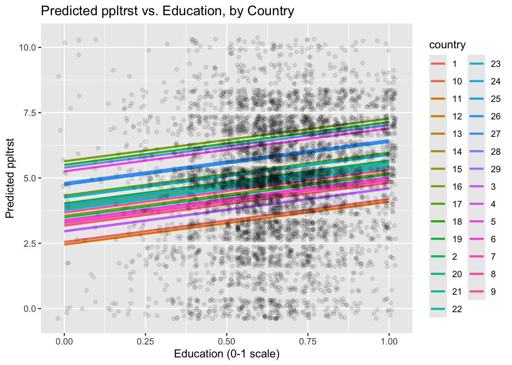
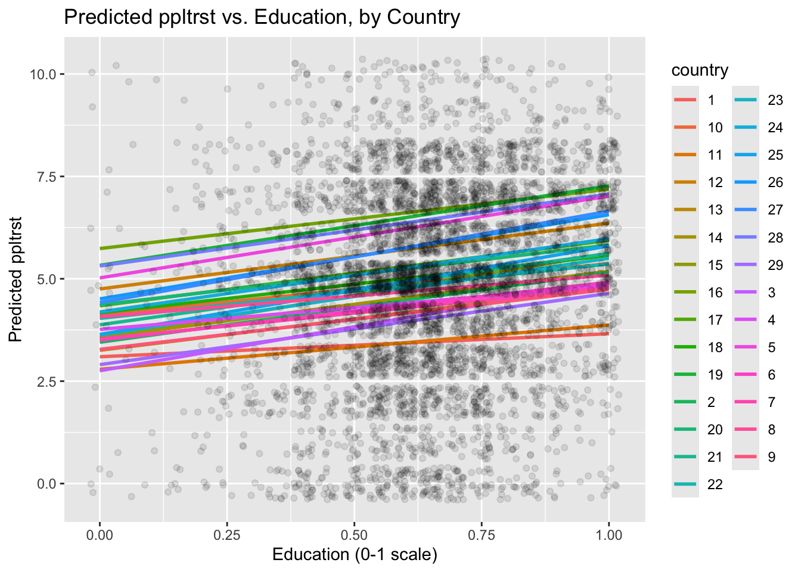
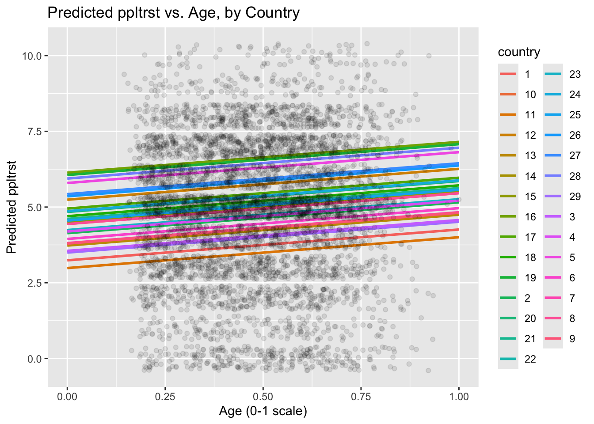

library(tidyverse)
library(lme4)
library(performance)
library(here)
library(parameters)Homework 05
(Preliminaries)
(1)
d <- readRDS(here("homework_05_files", "ess5000.rds"))
psych::describe(d) vars n mean sd median trimmed mad min max
cntry* 1 5000 15.79 7.45 13.00 15.77 8.90 1.00 29.00
country 2 5000 15.79 7.45 13.00 15.77 8.90 1.00 29.00
ppltrst 3 5000 4.87 2.36 5.00 4.96 2.97 0.00 10.00
vote 4 5000 0.77 0.42 1.00 0.84 0.00 0.00 1.00
stflife 5 5000 6.74 2.34 7.00 6.94 1.48 0.00 10.00
euftf 6 5000 5.16 2.74 5.00 5.20 2.97 0.00 10.00
agea 7 5000 48.41 17.32 48.00 48.04 20.76 15.00 101.00
eduyrs 8 5000 12.98 3.66 13.00 13.05 2.97 0.00 20.00
incdecile 9 4094 5.52 2.77 6.00 5.50 2.97 1.00 10.00
region 10 5000 194.93 92.94 202.50 195.17 97.11 1.00 350.00
female 11 5000 0.54 0.50 1.00 0.55 0.00 0.00 1.00
attend 12 5000 2.54 1.52 2.00 2.38 1.48 1.00 7.00
health 13 5000 3.67 0.90 4.00 3.72 1.48 1.00 5.00
gnipc1000 14 5000 29.96 17.10 32.83 29.42 14.14 2.99 102.07
c_imf_cond_any 15 5000 0.19 0.39 0.00 0.12 0.00 0.00 1.00
c_fhpr_2012 16 5000 2.10 1.87 1.00 1.75 0.00 1.00 6.00
c_fhstanu_2012 17 5000 1.61 0.75 2.00 1.76 0.00 0.00 2.00
c_assn_2011 18 5000 1.41 0.76 2.00 1.52 0.00 0.00 2.00
c_disap_2011 19 5000 1.53 0.85 2.00 1.66 0.00 0.00 2.00
c_dommov_2011 20 5000 1.98 0.18 2.00 2.00 0.00 0.00 2.00
c_elecsd_2011 21 5000 1.58 0.75 2.00 1.72 0.00 0.00 2.00
c_empinx_2011 22 5000 9.80 3.59 11.00 10.38 1.48 2.00 13.00
c_formov_2011 23 5000 1.56 0.76 2.00 1.70 0.00 0.00 2.00
c_injud_2011 24 5000 1.42 0.86 2.00 1.52 0.00 0.00 2.00
c_kill_2011 25 5000 1.41 0.76 2.00 1.51 0.00 0.00 2.00
c_polpris_2011 26 5000 1.38 0.76 2.00 1.48 0.00 0.00 2.00
c_relfre_2011 27 5000 1.31 0.86 2.00 1.39 0.00 0.00 2.00
c_speech_2011 28 5000 0.95 0.52 1.00 0.94 0.00 0.00 2.00
c_tort_2011 29 5000 1.08 0.77 1.00 1.10 1.48 0.00 2.00
c_wecon_2011 30 5000 2.14 0.80 2.00 2.17 1.48 1.00 3.00
c_wopol_2011 31 5000 2.32 0.47 2.00 2.27 0.00 2.00 3.00
c_worker_2011 32 5000 1.01 0.57 1.00 1.01 0.00 0.00 2.00
c_accountability_2012 33 5000 0.75 0.87 1.06 0.86 0.48 -0.96 1.75
c_corruption_2012 34 5000 0.72 1.13 1.05 0.75 1.09 -1.03 2.39
c_effectiveness_2012 35 5000 0.85 0.83 1.11 0.89 0.69 -0.58 2.21
c_law_2012 36 5000 0.78 0.98 1.04 0.85 0.96 -0.82 1.95
c_quality_2012 37 5000 0.86 0.77 0.97 0.92 0.84 -0.61 1.89
c_stability_2012 38 5000 0.36 0.65 0.50 0.41 0.63 -1.15 1.40
c_ticpi_2013 39 5000 58.35 20.74 60.00 58.98 25.20 25.00 91.00
dweight 40 5000 1.12 0.48 1.01 1.07 0.24 0.12 4.00
pweight 41 5000 2.50 1.63 2.28 2.43 0.83 0.03 5.45
wt 42 5000 2.81 2.35 2.31 2.50 1.71 0.03 19.55
range skew kurtosis se
cntry* 28.00 0.02 -1.23 0.11
country 28.00 0.02 -1.23 0.11
ppltrst 10.00 -0.25 -0.47 0.03
vote 1.00 -1.27 -0.38 0.01
stflife 10.00 -0.82 0.29 0.03
euftf 10.00 -0.09 -0.68 0.04
agea 86.00 0.15 -0.84 0.25
eduyrs 20.00 -0.31 0.37 0.05
incdecile 9.00 0.02 -1.15 0.04
region 349.00 -0.09 -1.17 1.31
female 1.00 -0.16 -1.98 0.01
attend 6.00 0.73 -0.40 0.02
health 4.00 -0.36 -0.10 0.01
gnipc1000 99.07 0.74 1.88 0.24
c_imf_cond_any 1.00 1.56 0.43 0.01
c_fhpr_2012 5.00 1.38 0.17 0.03
c_fhstanu_2012 2.00 -1.53 0.55 0.01
c_assn_2011 2.00 -0.85 -0.77 0.01
c_disap_2011 2.00 -1.24 -0.46 0.01
c_dommov_2011 2.00 -10.90 116.91 0.00
c_elecsd_2011 2.00 -1.39 0.21 0.01
c_empinx_2011 11.00 -1.50 0.71 0.05
c_formov_2011 2.00 -1.34 0.05 0.01
c_injud_2011 2.00 -0.91 -1.03 0.01
c_kill_2011 2.00 -0.84 -0.78 0.01
c_polpris_2011 2.00 -0.77 -0.86 0.01
c_relfre_2011 2.00 -0.65 -1.34 0.01
c_speech_2011 2.00 -0.07 0.70 0.01
c_tort_2011 2.00 -0.13 -1.29 0.01
c_wecon_2011 2.00 -0.25 -1.38 0.01
c_wopol_2011 1.00 0.77 -1.40 0.01
c_worker_2011 2.00 0.00 0.09 0.01
c_accountability_2012 2.72 -1.12 -0.26 0.01
c_corruption_2012 3.42 -0.43 -1.26 0.02
c_effectiveness_2012 2.80 -0.54 -1.12 0.01
c_law_2012 2.77 -0.66 -1.08 0.01
c_quality_2012 2.50 -0.74 -0.78 0.01
c_stability_2012 2.55 -0.71 -0.53 0.01
c_ticpi_2013 66.00 -0.38 -1.27 0.29
dweight 3.88 2.35 9.66 0.01
pweight 5.41 0.46 -0.81 0.02
wt 19.52 1.85 5.73 0.03ppltrst has a mean of 4.87 and a variance of \(2.36^2=5.57\).
(2)
p <- ggplot(data = d,
aes(x = ppltrst)) +
geom_histogram(bins = 10,
binwidth = 1,
color = "white") +
labs(title = "Distribution of ppltrust")
p
The modal value of ppltrst is 5.
(3)
d2 <- d |>
group_by(country)
p2 <- ggplot(data = d,
aes(x = ppltrst, group = country, color = country)) +
geom_density() +
scale_color_viridis_c(option = "mako") +
labs(title = "Distribution of ppltrust by Country")
p2
d2 <- d |>
group_by(country) |>
summarize(mean = mean(ppltrst),
N = n())
p3 <- ggplot(data = d2,
aes(x = mean)) +
geom_histogram(bins = 10,
binwidth = 1,
color = "white") +
labs(title = "Distribution of Country Means of ppltrust")
p3
The countries with the most observations have values closer to the modal value 5. The countries with the smallest sample sizes make up most of the values far from 5. Most likely with partial pooling, the country means will shrink to become closer to 5. Countries with the smaller sample sizes will be the ones that have larger shrinkages toward 5.
(Single Dimension)
(4)
m0 <- lmer(ppltrst ~ 1 + (1 | country), data = d, REML = FALSE)
summary(m0)Linear mixed model fit by maximum likelihood ['lmerMod']
Formula: ppltrst ~ 1 + (1 | country)
Data: d
AIC BIC logLik deviance df.resid
22490.9 22510.4 -11242.4 22484.9 4997
Scaled residuals:
Min 1Q Median 3Q Max
-2.79077 -0.66911 0.00127 0.67580 2.87402
Random effects:
Groups Name Variance Std.Dev.
country (Intercept) 0.8744 0.9351
Residual 5.1737 2.2746
Number of obs: 5000, groups: country, 29
Fixed effects:
Estimate Std. Error t value
(Intercept) 4.9732 0.1866 26.66(5)
print(paste0("ICC:", 0.8744/(0.8744+5.1737)))[1] "ICC:0.144574329128156"(6)
performance::icc(m0)# Intraclass Correlation Coefficient
Adjusted ICC: 0.145
Unadjusted ICC: 0.145Yes, the results from performance are very close to the manual calculation.
(7)
This ICC means that roughly 14.5% of the variance in ppltrst is between countries, and the rest of the variance is within countries.
(8)
m1 <- lm(ppltrst ~ 1,
data = d)
summary(m1)
Call:
lm(formula = ppltrst ~ 1, data = d)
Residuals:
Min 1Q Median 3Q Max
-4.8678 -1.8678 0.1322 2.1322 5.1322
Coefficients:
Estimate Std. Error t value Pr(>|t|)
(Intercept) 4.86780 0.03331 146.1 <2e-16 ***
---
Signif. codes: 0 '***' 0.001 '**' 0.01 '*' 0.05 '.' 0.1 ' ' 1
Residual standard error: 2.355 on 4999 degrees of freedomcompare_performance(m0, m1)# Comparison of Model Performance Indices
Name | Model | AIC (weights) | AICc (weights) | BIC (weights) | RMSE
----------------------------------------------------------------------------
m0 | lmerMod | 22490.9 (>.999) | 22490.9 (>.999) | 22510.4 (>.999) | 2.269
m1 | lm | 22758.7 (<.001) | 22758.7 (<.001) | 22771.7 (<.001) | 2.355
Name | Sigma | R2 (cond.) | R2 (marg.) | ICC | R2 | R2 (adj.)
------------------------------------------------------------------
m0 | 2.275 | 0.145 | 0.000 | 0.145 | |
m1 | 2.355 | | | | 0.000 | 0.000print(paste0("Difference in BIC:", BIC(m0) - BIC(m1)))[1] "Difference in BIC:-261.319078716169"Although the estimates between the partial pooling and full pooling are similar, the random intercepts have lower AIC, BIC, and RMSE, meaning random intercepts have a better model fit. Therefore the complexity of random intercepts is worth using.
(9)
# Observed Means
d3 <- d |>
group_by(country) |>
summarise(mean = mean(ppltrst))
# Predicted Means
d3 <- d3 |>
mutate(pred_mean = predict(m0, newdata = d3)) |>
arrange(desc(pred_mean))
print(d3, n = Inf)# A tibble: 29 × 3
country mean pred_mean
<dbl> <dbl> <dbl>
1 8 6.87 6.68
2 21 6.70 6.50
3 11 6.64 6.45
4 25 6.45 6.35
5 20 5.92 5.89
6 19 6 5.79
7 4 5.81 5.74
8 17 5.8 5.35
9 9 5.62 5.35
10 13 5.35 5.34
11 10 5.02 5.02
12 7 5.01 5.01
13 18 5.00 5.00
14 15 5 5.00
15 2 4.99 4.99
16 14 4.98 4.98
17 16 4.88 4.89
18 28 4.72 4.72
19 6 4.58 4.60
20 12 4.52 4.52
21 24 4.47 4.47
22 27 4.35 4.43
23 26 4.27 4.42
24 5 3.17 4.06
25 29 3.38 4.05
26 22 4 4.02
27 23 3.56 3.66
28 1 3 3.47
29 3 3.33 3.46Country 8 has the highest estimated trust (6.68), and country 3 has the lowest estimated trust (3.46).
rand_ints = as.data.frame(ranef(m0, condVar = TRUE))
ggplot(rand_ints, aes(y = condval,x = grp)) +
geom_point() +
geom_errorbar(aes(ymin = condval - 1.96*condsd,
max = condval + 1.96*condsd), width = 0) +
labs(title = "EB est. of random component of intercept",
x = "Country Identifier",
y = "Estimate and 95% CI")
d3# A tibble: 29 × 3
country mean pred_mean
<dbl> <dbl> <dbl>
1 8 6.87 6.68
2 21 6.70 6.50
3 11 6.64 6.45
4 25 6.45 6.35
5 20 5.92 5.89
6 19 6 5.79
7 4 5.81 5.74
8 17 5.8 5.35
9 9 5.62 5.35
10 13 5.35 5.34
# ℹ 19 more rowsWe can see from the table that the predicted means shrink toward 5, and that the countries at the highest and lowest values of ppltrst tend to shrink more. The caterpillar plot shows narrow error bands for the countries with the largest sample size, and most are clustered close to the overall mean. Likewise, countries with smaller sample sizes have very large error bars, many of which overlap with the overall mean. This shows the previous predictions were accurate and that the small n countries are the most likely to be affected by shrinkage.
(Two Dimensions)
(10)
d5 <- d |>
mutate(eduyrs1 = (eduyrs / 20))
summary(d5$eduyrs1) Min. 1st Qu. Median Mean 3rd Qu. Max.
0.0000 0.5500 0.6500 0.6489 0.7500 1.0000 m2 <- lmer(ppltrst ~ 1 + eduyrs1 + (1 | country), data = d5, REML = FALSE)
parameters::model_parameters(m2)# Fixed Effects
Parameter | Coefficient | SE | 95% CI | t(4996) | p
------------------------------------------------------------------
(Intercept) | 3.94 | 0.21 | [3.52, 4.35] | 18.47 | < .001
eduyrs1 | 1.64 | 0.18 | [1.29, 1.99] | 9.17 | < .001
# Random Effects
Parameter | Coefficient
-------------------------------------
SD (Intercept: country) | 0.90
SD (Residual) | 2.26
Uncertainty intervals (equal-tailed) and p-values (two-tailed) computed
using a Wald t-distribution approximation. Uncertainty intervals for
random effect variances computed using a Wald z-distribution
approximation.The expected effect of moving from the lowest observed educated country to the highest is roughly 1.64 higher ppltrst.
(11)
pred_df <- expand_grid(
eduyrs1 = seq(0,1,.1),
country = levels(factor(d5$country)))
pred_df <- pred_df |>
mutate(pred = predict(m2, newdata = pred_df))
ggplot() +
geom_smooth(data = pred_df,
aes(x = eduyrs1, y = pred, group = country, color = country),
method = "lm", alpha = 0.5, se = FALSE) +
geom_jitter(data = d5,
aes(x = eduyrs1, y = ppltrst), alpha = 0.1) +
labs(title = "Predicted ppltrst vs. Education, by Country",
x = "Education (0-1 scale)",
y = "Predicted ppltrst")`geom_smooth()` using formula = 'y ~ x'
(12)
m3 <- lmer(ppltrst ~ 1 + eduyrs1 + (1 + eduyrs1 | country), data = d5, REML = FALSE)
parameters::model_parameters(m3)# Fixed Effects
Parameter | Coefficient | SE | 95% CI | t(4994) | p
------------------------------------------------------------------
(Intercept) | 3.96 | 0.23 | [3.52, 4.41] | 17.61 | < .001
eduyrs1 | 1.60 | 0.26 | [1.09, 2.10] | 6.18 | < .001
# Random Effects
Parameter | Coefficient
----------------------------------------------
SD (Intercept: country) | 0.89
SD (eduyrs1: country) | 0.71
Cor (Intercept~eduyrs1: country) | -0.22
SD (Residual) | 2.25
Uncertainty intervals (equal-tailed) and p-values (two-tailed) computed
using a Wald t-distribution approximation. Uncertainty intervals for
random effect variances computed using a Wald z-distribution
approximation.pred_df <- pred_df |>
mutate(pred = predict(m3, newdata = pred_df))
ggplot() +
geom_smooth(data = pred_df,
aes(x = eduyrs1, y = pred, group = country, color = country),
method = "lm", alpha = 0.5, se = FALSE) +
geom_jitter(data = d5,
aes(x = eduyrs1, y = ppltrst), alpha = 0.1) +
labs(title = "Predicted ppltrst vs. Education, by Country",
x = "Education (0-1 scale)",
y = "Predicted ppltrst")`geom_smooth()` using formula = 'y ~ x'
(13)
compare_performance(m2, m3)Some of the nested models seem to be identical and probably only vary in
their random effects.# Comparison of Model Performance Indices
Name | Model | AIC (weights) | AICc (weights) | BIC (weights)
--------------------------------------------------------------------
m2 | lmerMod | 22409.6 (0.723) | 22409.6 (0.723) | 22435.6 (0.999)
m3 | lmerMod | 22411.5 (0.277) | 22411.5 (0.277) | 22450.6 (<.001)
Name | R2 (cond.) | R2 (marg.) | ICC | RMSE | Sigma
------------------------------------------------------
m2 | 0.151 | 0.015 | 0.138 | 2.250 | 2.256
m3 | 0.155 | 0.014 | 0.143 | 2.246 | 2.253No. The previous model with only random intercepts had a slightly better fit. This means that the slope of education does not vary that much across countries on average.
(14)
d6 <- d5 |>
mutate(agea1 = agea/101,
attend1 = attend/7,
health1 = health/5)
summary(d6$agea1) Min. 1st Qu. Median Mean 3rd Qu. Max.
0.1485 0.3366 0.4752 0.4793 0.6139 1.0000 summary(d6$attend1) Min. 1st Qu. Median Mean 3rd Qu. Max.
0.1429 0.1429 0.2857 0.3635 0.4286 1.0000 summary(d6$health1) Min. 1st Qu. Median Mean 3rd Qu. Max.
0.2000 0.6000 0.8000 0.7343 0.8000 1.0000 m4 <- lmer(ppltrst ~ 1 + eduyrs1 + agea1 + I(agea1^2) + attend1 + health1 + female + (1 | country), data = d6, REML = FALSE)
parameters::model_parameters(m4)# Fixed Effects
Parameter | Coefficient | SE | 95% CI | t(4991) | p
---------------------------------------------------------------------
(Intercept) | 2.39 | 0.36 | [ 1.67, 3.10] | 6.56 | < .001
eduyrs1 | 1.65 | 0.19 | [ 1.28, 2.02] | 8.73 | < .001
agea1 | -2.84e-03 | 1.02 | [-2.00, 1.99] | -2.78e-03 | 0.998
agea1^2 | 1.02 | 1.02 | [-0.98, 3.02] | 1.00 | 0.318
attend1 | 0.48 | 0.16 | [ 0.17, 0.79] | 3.07 | 0.002
health1 | 1.44 | 0.20 | [ 1.04, 1.83] | 7.17 | < .001
female | -0.01 | 0.06 | [-0.14, 0.11] | -0.18 | 0.860
# Random Effects
Parameter | Coefficient
-------------------------------------
SD (Intercept: country) | 0.89
SD (Residual) | 2.24
Uncertainty intervals (equal-tailed) and p-values (two-tailed) computed
using a Wald t-distribution approximation. Uncertainty intervals for
random effect variances computed using a Wald z-distribution
approximation.means <- d6 |>
summarize(eduyrs1 = mean(eduyrs1),
attend1 = mean(attend1),
health1 = mean(health1),
female = mean(female))
grid <- expand_grid(
agea1 = seq(0, 1, 0.1),
eduyrs1 = means$eduyrs1,
attend1 = means$attend1,
health1 = means$health1,
female = means$female,
country = levels(factor(d6$country)))
grid$prediction <- predict(m4, newdata = grid)
ggplot() +
geom_smooth(data = grid,
aes(x = agea1, y = prediction, color = country, group = country),
method = "lm", alpha = 0.5, se = FALSE) +
geom_jitter(data = d6,
aes(x = agea1, y = ppltrst), alpha = 0.1) +
labs(title = "Predicted ppltrst vs. Age, by Country",
x = "Age (0-1 scale)",
y = "Predicted ppltrst")`geom_smooth()` using formula = 'y ~ x'